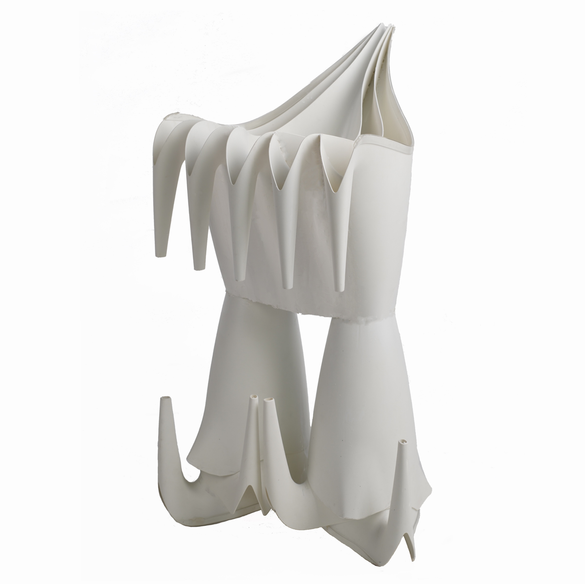
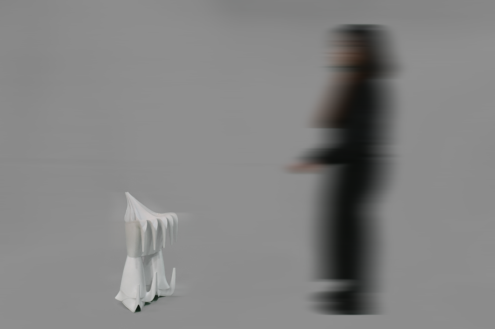
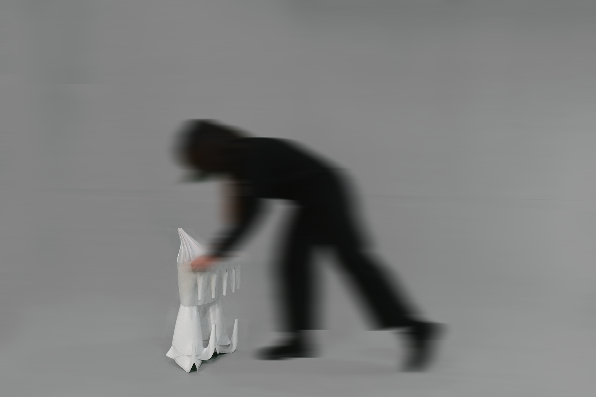
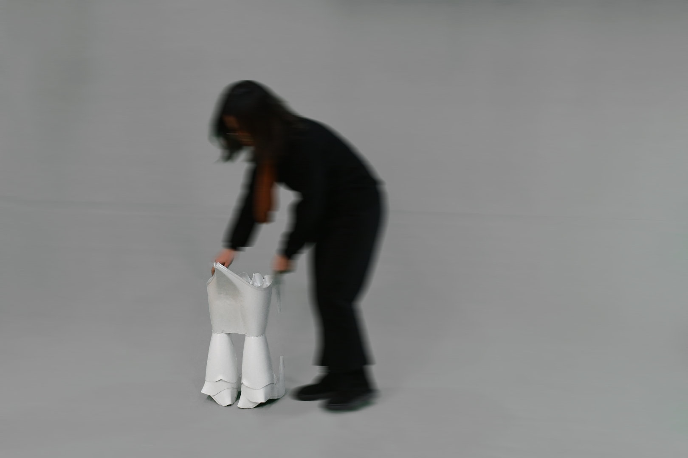
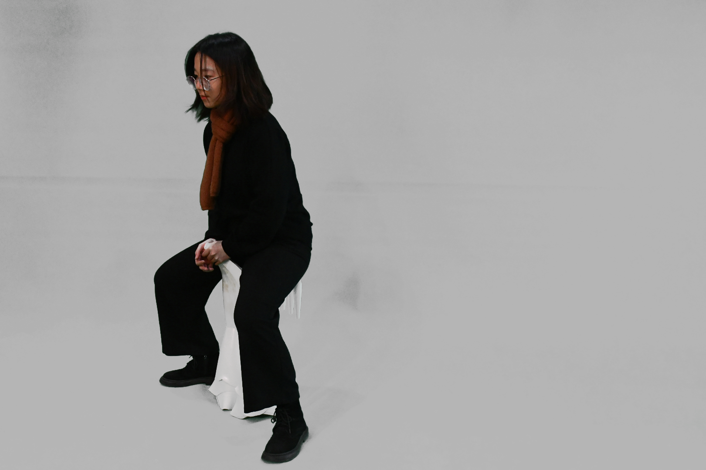
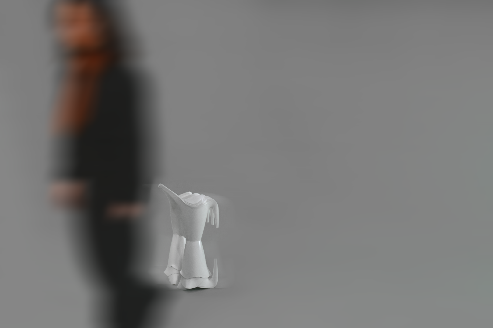
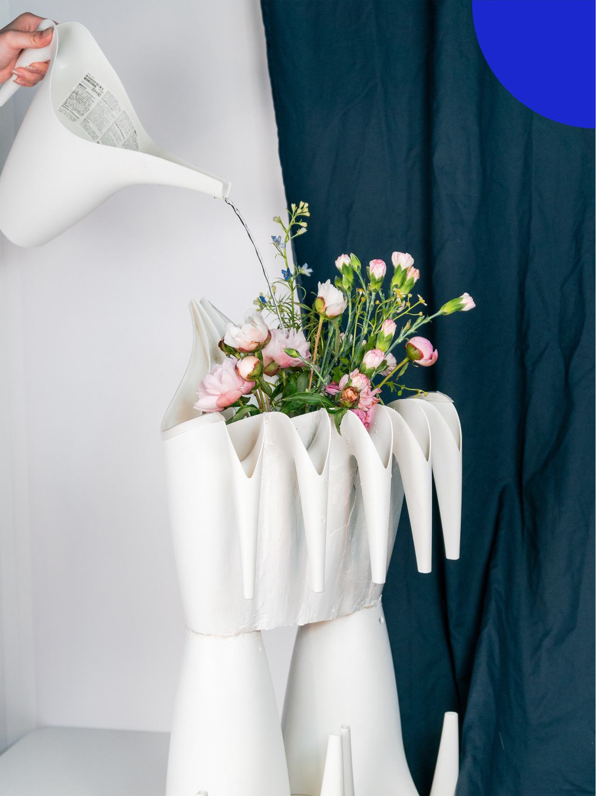
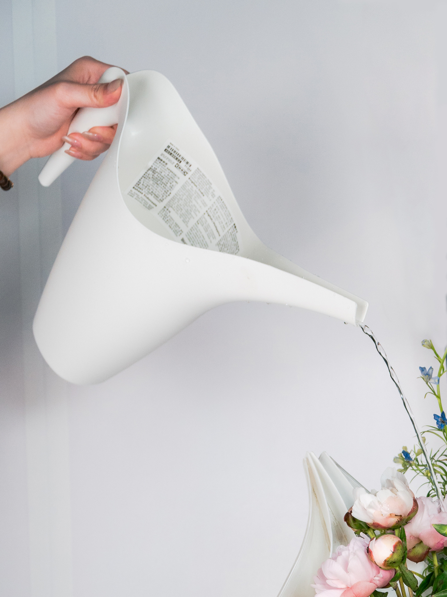
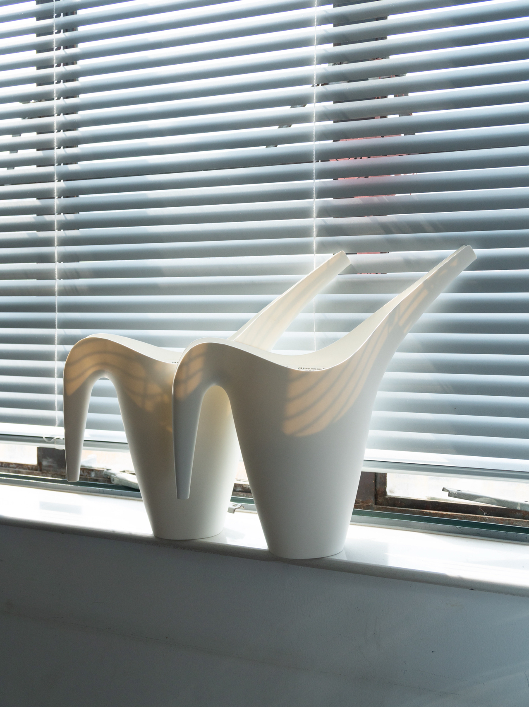
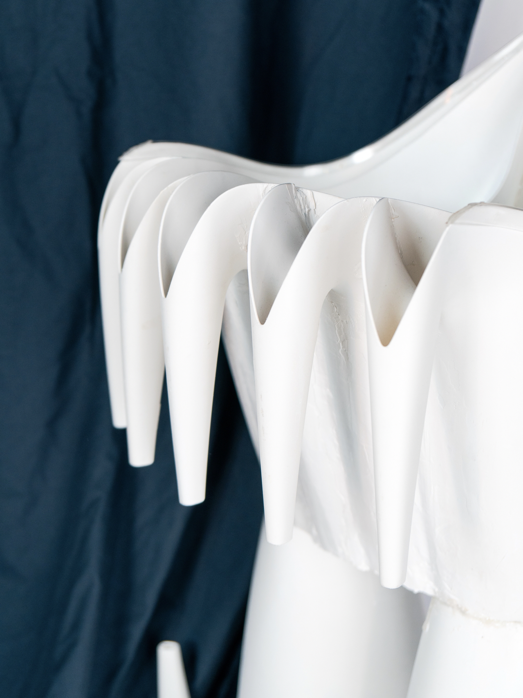

P((O))T
发现秩序之美，打破、重构秩序是我认为的黑客精神。这次的坐具设计中，我发现了宜家浇水壶的秩序之美，有生命力和流动性的线条赋予了它秩序的自然美，使其在能浇花的同时也能成为装饰品。我延续了它的秩序，通过解构、阵列、嵌套、堆叠的方式，创造出坐面和支撑结构，内化为属于壶凳的秩序之美。

使用过程 Usage scenario
    壶浇壶中花 Usage scenario
   